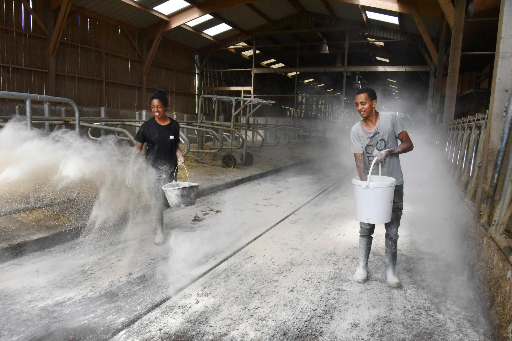

Présentation
Notre modèle associatif vous intrigue ? Venez l’explorer en détail avec nous.
S’il est un domaine dans lequel le monde a les yeux rivés sur nous… C’est certainement celui là : la gastronomie ! Et d’après l’Unesco, le vin s’inscrit dans le cadre du repas gastronomique des Français… Alors qu’attendez-vous pour vous lancer dans l’aventure et participer vous aussi à la préservation et au développement d’un des fleurons du patrimoine immatériel de l’humanité ?
Dans un pays comme le nôtre, réputé pour la qualité de ces vins, il n’y a pas de place pour l’amateurisme ! Il faut jongler sans cesse entre tradition, savoir-faire, science et innovation pour améliorer sans cesse la qualité des produits, et ce à chaque étape, depuis la viticulture jusqu’à la commercialisation en passant par la vinification. Exigence et expertise sont donc de mise pour exercer dans ce secteur d’activité… Sans oublier une bonne dose de motivation et de passion !
Les métiers de la vigne et du vin sont nombreux, variés et complémentaires… Mais au sein d’un seul et même métier, il faut parfois se montrer très polyvalent. C’est le cas du viticulteur par exemple. Il exerce sur le terrain, au grand air et dans les chais. Il doit prendre soin de sa vigne, saison après saison, année après année. Il doit l’entretenir, la nourrir, la faire grandir. Son activité dépend des aléas climatiques et il est donc indispensable de bien connaître la nature pour pouvoir s’adapter et en tirer le meilleur. Une fois les vendanges effectuées, reste à réaliser la vinification pour transformer le raisin.
Tout au long de cette belle aventure, les conseils avisés d’un œnologue peuvent être très précieux. Ce professionnel est garant de la qualité. Il accompagne les viticulteurs et les conseille tout au long de la production. Son palais n’a d’égal que sa parfaite connaissance et maîtrise de l’univers du vin, depuis le cep jusqu’à la bouteille.
Nos Maisons vous forment à différents métiers pour que vous aussi, vous puissiez, un jour, faire partie de cette grande famille de spécialistes.
Les principaux métiers de la viticulture sont :
Si vous exercez en tant que propriétaire, vos connaissances professionnelles doivent être très solides car vous devez respecter l’ensemble des réglementations générales mais également celles spécifiques à l’appellation à laquelle vous prétendez.
Si votre entreprise est à taille humaine, il y a de grandes chances pour que vous mettiez la main à la pâte lors de la commercialisation. La vente directe est idéale pour celles et ceux qui aiment parler de leur production et aller à la rencontre des amateurs de vin. L’œnotourisme se développe également .Vous pouvez proposer des visites et des dégustations au cœur de votre exploitation… Voire même y installer quelques chambres d’hôtes pour ravir les touristes de passage. Faire vivre le territoire en faisant découvrir le terroir, c’est une grande fierté !
Si vous choisissez de vous rapprocher et de devenir membre d’une coopérative pour écouler votre production, vous devrez être à l’écoute des autres. Ensemble, vous déciderez de la meilleure stratégie à adopter pour produire et vendre le fruit de votre travail.


Il faut croire en ses rêves, il faut tenter, il faut y aller. La viticulture et l’œnologie, c’est un milieu qui permet ça, de tenter, de rêver, d’aller plus loin.
formé aux métiers de la viticulture et de l’œnologie
Les vendanges sont des moments de partage inoubliables… Et parfaits pour découvrir le métier avant de vous lancer ! Si vous avez envie de jouer collectif par la suite, intégrez un groupement de vignerons au sein d’une cave coopérative. C’est si bon de pouvoir compter sur les autres !

En formation viticulture et œnologie à la MFR de Vayres, proche de Bordeaux, Gauthier explique son expérience ce milieu.
Voir l’interviewCes métiers sont faits pour vous si :
vous aimez le
contact avec la nature
vous avez envie de
travailler au grand air
vous avez à cœur de
nourrir les autres
vous souhaitez cultiver
un certain savoir-faire
vous êtes curieux de tirer
le meilleur parti des nouvelles technologies
vous êtes toujours partant
pour vivre de nouvelles aventures

01/05
Vous aimez vous cultiver et cultiver la nature ? Vous trouverez forcément votre bonheur dans l’horticulture ou le maraîchage.
02/05
Vous aimez le contact avec la nature et souhaitez renforcer vos connaissances ? Alors, les métiers de l’agriculture sont faits pour vous !

03/05
Rien n’est plus précieux à vos yeux que la richesse de la nature ? Aidez-nous à la préserver grâce aux métiers de l’environnement.

04/05
Vous puisez vos forces dans la relation que vous entretenez avec la nature ? Venez en prendre soin en choisissant les métiers de la forêt.

05/05
Vous avez le sens inné du contact… Et surtout vous adorez ça ? Optez pour les métiers du commerce, de la vente et du magasinage.
Être bien accompagné, ça commence dès maintenant !
Nos équipes sont à votre disposition pour répondre à vos questions.